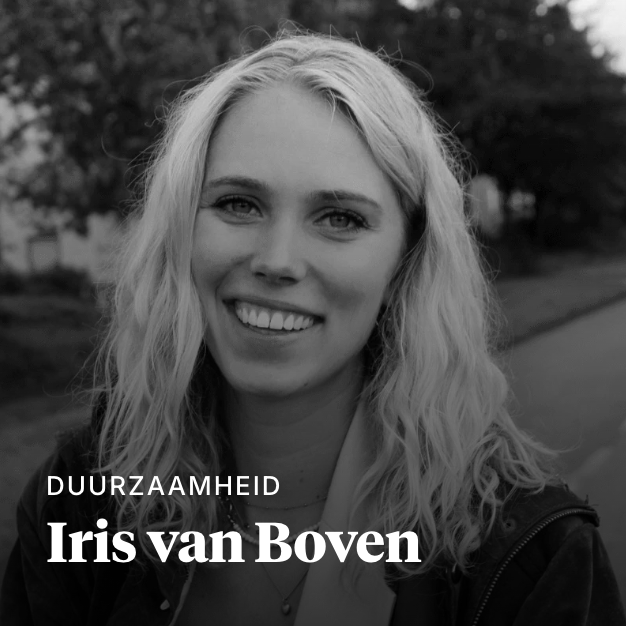
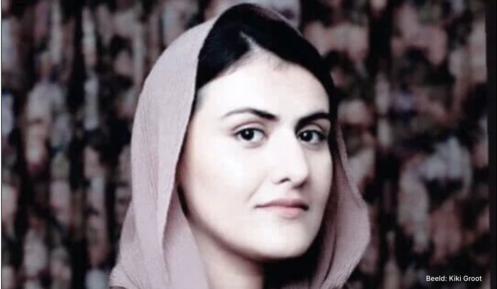
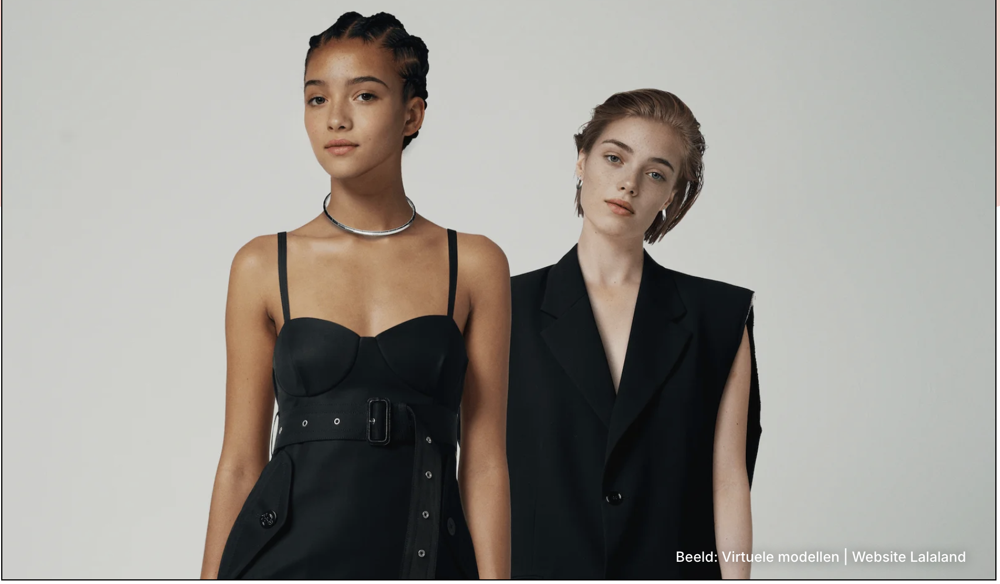
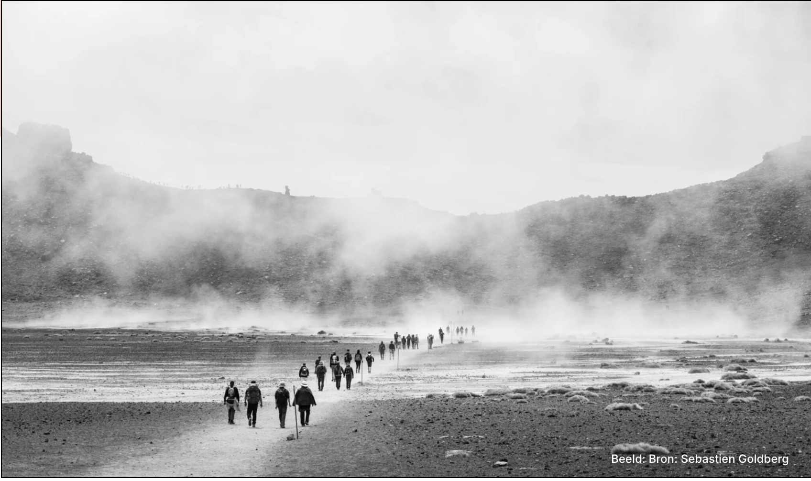

Carrière maken als Amsterdamse polaroidfotograaf: ‘Soms is het een strijd om de nacht’
0 keer gelezen
BINNENLAND
Met een grote glimlach en een camera leggen de polaroidfotografen het Amsterdamse nachtleven vast op instax fotopapier. Maar hoe ziet hun leven eruit achter de lens? “In de stad kan ik mijn verdriet weglachen.”
DOOR:IRIS VAN BOVEN
LEESTIJD:4 MIN
“Foto? Willen jullie een foto?,” vraagt één van de polaroidfotografen die door het centrum van Amsterdam zwerft. In zijn ene hand houdt hij een drankje vast, en met zijn andere begroet hij de mensen op de dansvloer. Een paar meter verderop stapt een andere fotograaf met hetzelfde doel de horecazaak binnen. Naast dat er een polaroidcamera om zijn nek hangt, houdt hij een bos rozen vast en neongekleurde speeltjes met flitslichten. Ook hij probeert geld te verdienen, maar komt niet verder dan de ingang. De serveerster verwijst hem vriendelijk naar de deur. “Jij bent hier niet welkom, sorry. Alleen onze vaste fotografen mogen hier foto’s maken.”
De Amsterdamse polaroidfotografen staan symbool voor het nachtleven van Amsterdam. In totaal zwerven er tientallen door het centrum. Ze hebben veelal een Pakistaanse of Bengaalse achtergrond, maar veel meer dan dat ze foto’s maken is er eigenlijk niet over ze bekend. Waar komen ze vandaan? Waar wonen ze? En nog interessanter: hoe komen ze aan hun camera? “Het gaat om een lang en gevoelig verleden,” vertelt Abdur (43), een van de drie polaroidfotografen die zijn verhaal heeft gedeeld met Red Pers.
Carrière maken
“De Pijp is écht de place to be om foto’s te verkopen,” zegt Kiran (42), die vanwege zijn onzekere verblijfsstatus in Nederland anoniem wil blijven, wanneer hij vertelt over zijn werk als polaroidfotograaf. Met zijn kleine postuur, wijde broek en zwarte jas ziet hij eruit als het klassieke stereotype polaroidfotograaf die rondzwerft in Amsterdam. Toch is hij een opvallende verschijning in de stad. Met meer dan 20 jaar ervaring als polaroidfotograaf gaat hij vrijwel niet meer anoniem over straat. De liefde van menig Amsterdammer is groot voor Kiran. Tijdens de coronacrisis werd er op initiatief van verschillende cafés een inzamelingsactie gestart om hem financieel te ondersteunen, met als slogan: “De Pijp is de Pijp niet zonder Kiran. We kunnen hem niet missen.”
Kiran, die momenteel verblijft in een tijdelijke woning van Vluchtelingenwerk in Amsterdam West, beweert zijn camera te hebben gekocht bij de Mediamarkt toen hij voor het eerst aan de slag ging. Zijn start was lastig: “Ik ben meerdere keren de tent uitgeramd door andere fotografen toen ik naamsbekendheid kreeg. Ze waren bang dat ik hun werk zou stelen.” Toen hij op het Gerard Douplein in elkaar werd geslagen door een andere fotograaf, sloeg de twijfel toe om zijn – toen nog – korte carrière als polaroidfotograaf stop te zetten. “Soms is het een strijd om de nacht.”
‘Het wordt niet gewaardeerd als ik zomaar foto’s maak in een andere wijk’
Volgens Kiran zijn er geen onderlinge afspraken zwart-wit op papier gedrukt. “Er is geen manager,” zegt hij met een serieus gezicht. “De cafés bepalen wie waar naar binnen mag, maar er zijn wel normen en waarden. Het wordt niet gewaardeerd als ik zomaar foto’s maak in een andere wijk.” Een van zijn conculega’s, Abdur, verkoopt foto’s in de binnenstad, maar neemt soms ook een paar straten mee van de wijk waar Kiran werkt. “Als Kiran al langs is geweest in een van de cafés, dan weet ik zeker dat er niks meer te verdienen valt,” vertelt hij met een zucht. Rahul (47), die ook vanwege zijn onzekere verblijfsstatus alleen anoniem wil antwoorden, heeft niet zoveel last van concurrentie. “Ik ga lekker mijn eigen gang,” zegt hij met een verlegen glimlach.
Het nachtleven
De gemiddelde polaroidfoto kost vijf euro en dat gaat volgens Abdur direct in de zak van de fotograaf. Toch is het niet makkelijk rondkomen, benadrukt hij. “Gemiddeld verdienen we maar tachtig euro op een avond.” Naast de lange nachten, een laag maandinkomen en dronken mensen die smeken om korting, kan het werk van een polaroidfotograaf ook best leuk zijn, vertelt Abdur. “Je wil niet weten wat ik allemaal heb gezien!”, zegt hij lachend als hij terugdenkt aan de afgelopen tien jaar.
Abdur werkt niet alleen in de binnenstad, maar fotografeert ook op boten tijdens Koningsdag en wordt wekelijks uitgenodigd voor privéfeestjes en diners. “Ik heb heel veel gekke en dronken mensen gezien,” zegt hij lachend.
‘In de stad kan ik mijn verdriet weglachen’
Volgens Abdur komen de meeste fotografen uit Pakistan of Bangladesh. “We zijn vrienden, collega’s, maar ook concurrenten.” Hoewel een enkeling van de fotografen een verblijfsvergunning heeft, benadrukt hij dat het merendeel van deze groep ongedocumenteerd is. Kiran is één van de polaroidfotografen die momenteel in afwachting is van de IND voor een verblijfsvergunning. “Ieder jaar hoop ik positief nieuws te ontvangen,” zegt hij. Vorig jaar verloor hij zijn moeder en kon hij tot zijn teleurstelling niet naar Bangladesh voor de uitvaart. “Ik voel me opgesloten in Nederland.” Ondanks de stress en pijn die hij ervaart, geeft het Amsterdamse nachtleven hem energie. “Vorig jaar zat ik nog een aantal maanden vast in de gevangenis, maar ik probeer de pijn te vergeten. In de stad kan ik mijn verdriet weglachen.”
Een lang verleden
De perceptie over de Amsterdamse polaroidfotografen rondom horecabezoekers is verdeeld. John (26) werkt al jaren als bewaker in de Pijp en is van zijn baas verplicht om sommige polaroidfotografen te weigeren. “Alleen Abdur en Kiran zijn hier welkom,” vertelt hij. “Zij wisselen elkaar keurig af. Ik heb er nog nooit problemen mee gehad, behalve dat er soms lastig mee te communiceren is.” Horecabezoeker Stijn (28) vindt dat de fotografen soms te vaak langskomen, ondanks dat het schatten zijn. “Ze vragen ieder kwartier opnieuw of ik op de foto wil.”
Stijn beweert dat alle fotografen in de stad werken voor een manager, en niet voor zichzelf. “Door mijn baan als makelaar heb ik veel contact met schoonmaakbedrijven. Via hen weet ik dat er tientallen polaroidfotografen samenwonen in een pand in het centrum van Amsterdam,” vertelt Stijn. Hij denkt zeker te weten dat de fotografen vanuit dat pand worden aangestuurd door hun manager. “Je denkt toch niet echt dat zij die camera’s zelf kopen?” Kiran, Abdur en Rahul ontkennen deze assumptie. “Ik wil er niks mee te maken hebben,” zegt Rahul. Abdur reageert dat het gaat om een lang en gevoelig verleden. “Je gaat er niet zomaar achter komen.” Ondanks dat hun reacties van elkaar verschillen, staat er een vergelijkbaar antwoord klaar: ze mogen het niet vertellen. “Vraag het maar aan iemand anders.”
Eindredactie door Isa Martens
Steun Red Pers
Je las dit artikel gratis, maar dat betekent niet dat het Red Pers niets heeft gekost.
Wij bieden jonge, aspirerende journalisten een podium én begeleiding. Dat kunnen we nog beter met jouw steun.
Die steun komt met twee voor de prijs van één, want onze sponsor matcht jouw donatie. Geef jij ons vijf euro?
Dan ontvangen wij een tientje.
€5
€10
€25
€50
ANDERS
Over de auteur:

Iris van Boven (1997, zij/haar) studeerde Internationale Betrekkingen aan de Universiteit van Amsterdam.
Ze is breed geïnteresseerd en vooral nieuwsgierig naar het persoonlijke verhaal achter het nieuws.
Voor Red Pers schrijft ze over migratie, duurzaamheid en het buitenland,
maar maakt soms ook een uitstapje naar een ander onderwerp.
Lees ook:

Verbindend, fris en vol energie:een duik in de opkomst van maté
7 SEP

Energieke start van de dag:de opkomst van smoothie bowls
1 MRT

Traditionele smaken herleven:een reis door Turkse theehuizen
20 NOV
Nieuwsbrief
Elke drie weken houden we je op de hoogte van wat we schreven en wat we lazen in de Red Pers-nieuwsbrief.